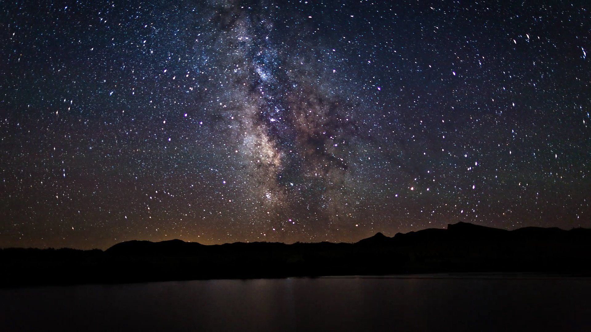
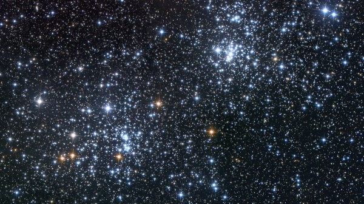
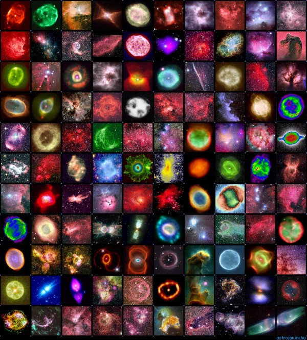
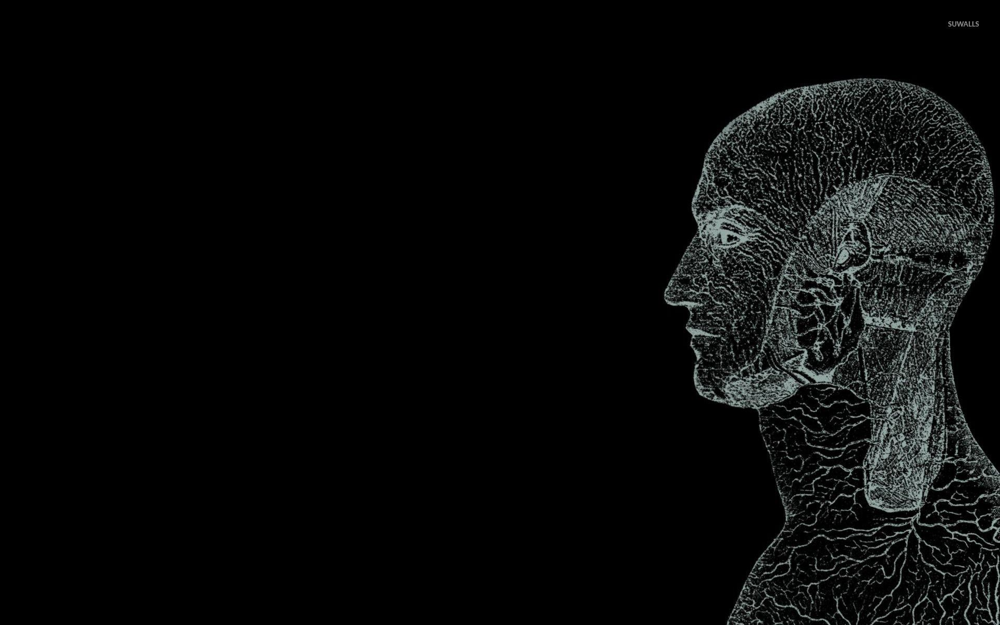

UNIVERSE IS ALIVE

How the Universe was formed?
The universe was formed 13.8 billion years ago. There are many theories in the world which state the formation
of the universe. One of the very famous theory is that of the Big Bang. It is the idea that the universe began
as just a single point, then expanded and stretched to grow as large as it is
right now—and it is still stretching! It tells us how we, humans, came into existence.
By the law of the nature, a living being emerges from a living being. Animals, birds, mammals, insects and
plants all of them emerge from a living being. An intelligent source is able to give birth to an intelligent
source. Humans have advanced so much through the technology that we are capable of looking at the furthest
distances through telescopes, travel to space and what not! Hence...
"Is the Universe Alive" by John Gibbon
...[In current cosmological thinking, there has been] a recent spectacular shift of viewpoint, and most
cosmologists are still struggling to come to grips with it. If one Universe exists, then it seems that there
must be many--very many, perhaps even an infinite number of universes. Our Universe has to be seen as just one
component of a vast array of universes, a self-reproducing system connected only by the tunnels through
space-time, which in this view are perhaps better regarded as cosmic umbilical cords that join a baby universe
to its parent.
But there is still a puzzle of why inflation should have just the right strength to lead to a universe like our
own. The "natural" size for a universe is down in the sub-atomic region, on the scale of the Planck length,
10-35 of a metre, the smallest "distance" that can exist. This is where evolution comes in.
The key element that Smolin [Lee Smolin, professor of physics at the Center for Gravitational Physics and
Geometry at Pennsylvania State University] has introduced is the idea that every time a black hole collapses
into a singularity and a new baby universe is formed with a new space-time, the laws of physics that are born
with it are slightly different. The force of gravity, for example, may be a little stronger--or weaker--than in
the parent. The process, he argues, resembles the way mutations provide the variability among organic life forms
on which natural selection can operate.
Each baby universe, says Smolin, is not a perfect replica of its parent but a slightly mutated form. The
original, natural state of a baby universe may indeed be to expand out to a few times the Planck length, before
collapsing once again. But if the random changes in the workings of the laws of physics--the mutations--happen
to allow a little bit more inflation, a baby universe will grow a little larger. If it becomes big enough, it
may separate into two or more different regions that each collapse to make a new singularity and thereby trigger
the birth of another generation of universes.
Those new universes will also be slightly different form their parents. Some may lose the ability to grow much
larger than the Planck length, and will fade back into the quantum realm. But some may have a little more
inflation still than their parents, growing even larger, producing more black holes and giving birth to more
baby universes in their turn. The number of new universes that are produced in each generation will be roughly
proportional to the volume of the parent universe. "The essential point," says Smolin, "is that the universes
that reproduce the most successfully by leaving the largest number of progeny dominate the ensemble after many
generations."
The end product should be not one but many universes, all about as big as it is possible to get while still
being inside a black hole and in which the parameters of physics are such that the formation of stars and black
holes is favoured. Our Universe exactly matches that description.
This explains the otherwise baffling mystery of why the Universe we live in should be "set up" in what seems, at
first sight, such an unusual way. Just as you would not expect a random collection of chemicals suddenly to
organize themselves into a human being, so you would not expect a random collection of physical laws emerging
from a singularity to give rise to a Universe like the one we live in.
Smolin has stopped short of suggesting that the Universe is alive. But heredity is one of the defining
attributes of life, and Smolin suggests that universes pass on their characteristics to their offspring with
only minor changes, just as people pass on their characteristics to their children with only minor changes.
Universes that are successful in evolutionary terms are the ones that leave the most offspring. Provided that
the random mutations are indeed small, there will be a genuinely evolutionary process favouring larger and
larger universes...
... Before Charles Darwin and Alfred Wallace came up with the idea of evolution, may people believed that the
only way to explain the existence of so unlikely an organism as a human being was by supernatural intervention.
The apparent unlikelikhood of the Universe has similarly led some people to suggest that the big bang many have
resulted from supernatural intervention. Even respectable cosmologists such as Davies [Paul Davies, cosmologist
at the University of Adelaide] and Frank Tippler of the University of New Orleans talk of the new cosmology as
revealing "the mind of God" at work.
But if Smolin is right, there is no longer any basis for invoking the supernatural. We live in a Universe which
is exactly the most likely kind of universe to exist if there are many living universes that have evolved in the
same way that living things on Earth have evolved."
“The only dominant theory we have of consciousness says that it is associated with complexity — with a system’s
ability
to act upon its own state and determine its own fate.” - Chandra X-Ray Observatory Centre
If the universe wasn't alive, then how would all this be possible?

The unchanging nature of the points of light in the sky?

How would have been these Nebulae formed?

How would these intelligent creatures walk on the surface of earth?
WE ARE THE UNIVERSE. THE UNIVERSE IS ALIVE.
To check out the references, click next.